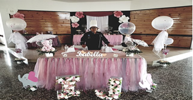
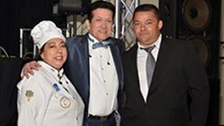
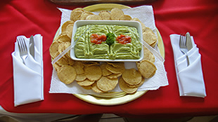
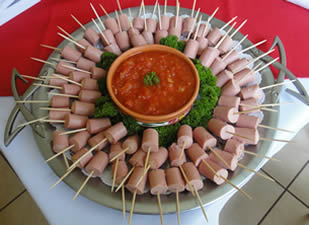
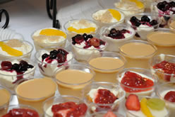
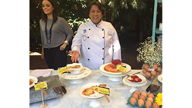

Timarvi Cathering Service
Quienes Somos.
TIMARVI es una empresa costarricense, que dio sus inicios en el año 1987, organizando evento de alimentos y bebidas.
Ahora ofrecemos una variedad de servicios ajustándonos a su presupuesto.
Nuestra empresa da garantía que la materia prima es de alta calidad, convirtiéndose en deliciosos platillos para compartir con su familia y amigos.
Su nombre se deriva de las primeras letras de la familia.
- TI Tito Gerente De Compras.
- MAR Marta Chef.
- VI Viviana Nutricionista.
-

Misión
Somos una empresa de Catering Service, enfocados a satisfacer la necesidad básica de alimentación, a nuestros clientes, con un excelente servicio personalizado, con alimentos frescos y de primera calidad, con un capital humano preparado y comprometido en servirle.
-

Visión
En los próximos cinco años, ser la empresa No1 en la mente de nuestros clientes y de futuros consumidores a nivel del GAM, cuando de realizar actividades se trate, satisfaciendo las necesidades básicas con calidad, profesionalismo y que nuestro capital humano sea el más satisfecho en servirle.
-


Valores
- -Compromiso: Los colaboradores sabemos y creemos en lo que hacemos y lo desempeñamos de la mejor forma para satisfacer al cliente – quien es la razón de ser de la empresa.
- -Eficiencia: Los colaboradores producimos los alimentos y/o servicios utilizando las mejores prácticas y herramientas, en el momento indicado, con habilidad y sin desperdicios, para lograr la excelencia.
- -Honestidad: los colaboradores sentimos y pensamos como el cliente y en lograr satisfacer sus necesidades de la mejor manera, con lealtad hacia la empresa y cumpliendo con todos los lineamientos de la misma.
- -Responsabilidad: Los colaboradores somos conscientes de que tenemos en nuestras manos la salud de nuestros clientes, por lo que actuamos con profesionalismo y con integridad y mejorar sin límites las tareas que se nos asignen.
- -Disponibilidad: Es mi cualidad de estar libre para servir en cualquier momento, con entusiasmo y profesionalismo.
- -Excelencia: Los colaboradores estamos conscientes de dar siempre lo mejor de nosotros o más bien exceder las expectativas, en función de calidad, servicio, atención al cliente, responsabilidad, profesionalismo, entre otros.
-

Objetivo Principal
Brindar al cliente alimentos bien preparados, de la mejor calidad, a un precio justo, bajo estándares de sanidad y buen servicio.
-

Reglamento para el Catering
-Curso de Manipulación de Alimentos.
-Transportadores de comida sierre hermético.
-Mantener las temperaturas adecuadas.
-Equipo de trabajo de acero inoxidable.
-Deposites de basura con tapa.
-Agua Potable.
-Personas capacitadas.
-Seguro de riesgos.
-Impuestos Municipales.
-Patente al día.